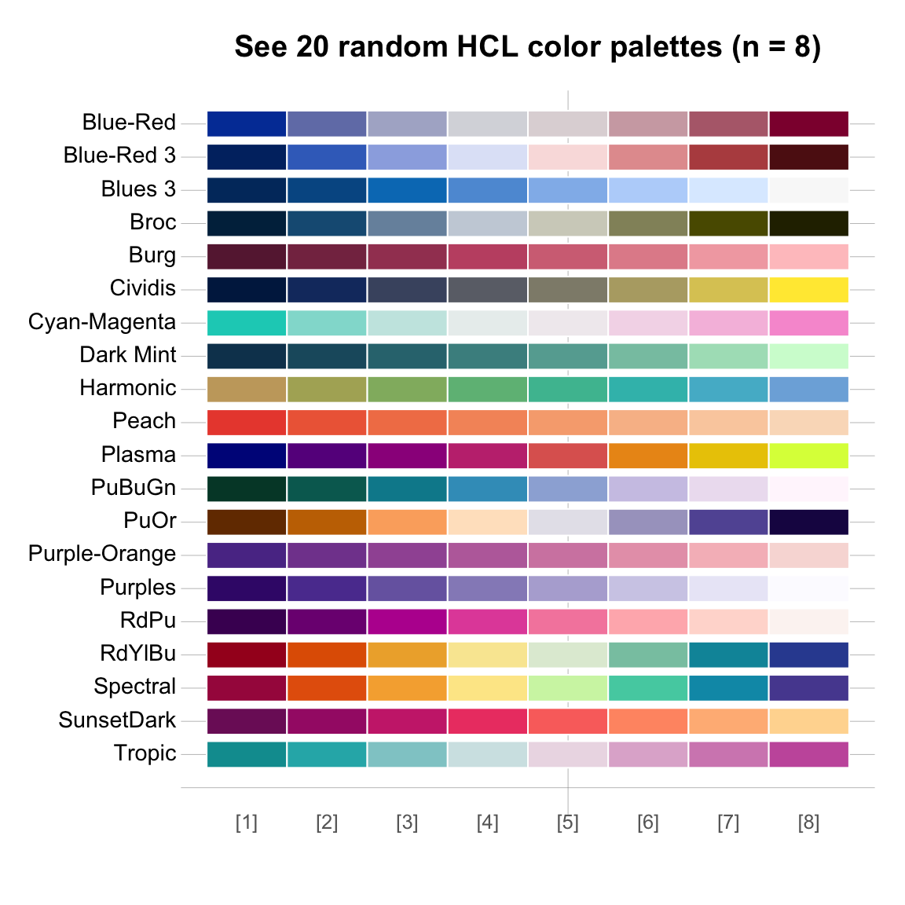
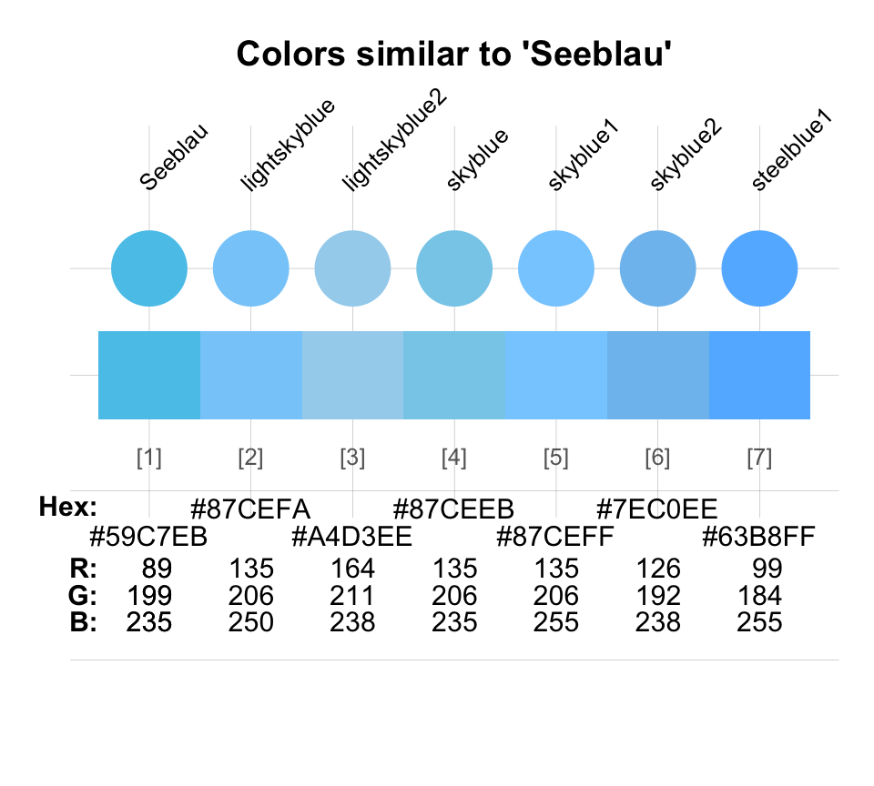

This vignette shows how various color-related tasks can be solved by the tools provided by unikn. (For a general introduction of the unikn colors, color palettes, and color functions, see the vignette on Colors and color functions. The vignette on text provides information on creating text boxes and decorations.)
The following recipes illustrate how plotting functions in R can use
the colors and color palettes provided by the unikn
package. Additional examples show how we can use the
seecol(), usecol(), newpal(), and
grepal() functions for solving color-related tasks.
Please install and/or load the unikn package to get started:
Using colors in base R
Task: Using unikn colors in visualizations created by base R graphics.
When creating base R visualizations (e.g., using
plot() for creating a scatterplot), use the
usecol() function in combination with any color palette
(e.g., pal_unikn) as the col argument:
Using colors in ggplot2
Task: Using unikn colors in visualizations created by the ggplot2 package.
When using the ggplot() function of
ggplot2 (e.g., for creating an area plot), use the
usecol() function for defining a color palette (of the
desired length and transparency) that is then provided as the
values of the scale_color_manual() or
scale_fill_manual() functions:
Wrap the desired color palette in the
usecol()function of unikn.Provide this palette as the
valuesof the ggplot2 functionsscale_color_manual()orscale_fill_manual().
# 0. Create data: ----
# Example based on https://www.r-graph-gallery.com/137-spring-shapes-data-art/
n <- 50
groups <- 1:n
df <- data.frame()
set.seed(3)
for (i in seq(1:30)){
data = data.frame(matrix(0, n, 3))
data[, 1] <- i
data[, 2] <- sample(groups, nrow(data))
data[, 3] <- prop.table(sample(c(rep(0, 100), c(1:n)), nrow(data)))
df = rbind(df, data)}
names(df) <- c("X","Group","Y")
df$Group <- as.factor(df$Group)
df <- df[c(2, 1, 3)]
df <- df[order(df$X, df$Group) , ]
rownames(df) <- NULL
my_data <- df
# 1. Colors: ----
# A. using RColorBrewer:
# library(RColorBrewer)
# cur_col <- brewer.pal(11, "Paired")
# cur_col <- colorRampPalette(cur_col)(n)
# cur_col <- cur_col[sample(c(1:length(cur_col)), size = length(cur_col))] # randomize
# B. using unikn colors:
library(unikn)
# Mix a color gradient:
cur_col <- usecol(c(Bordeaux, "white", Petrol), n = n)
# cur_col <- cur_col[sample(c(1:length(cur_col)), size = length(cur_col))] # randomize
# 2. Plotting: ----
library(ggplot2)
ggplot(my_data, aes(x = X, y = Y, fill = Group)) +
geom_area() +
scale_fill_manual(values = cur_col) +
theme_void() +
theme(legend.position = "none")
Viewing and comparing color palettes
Task: Inspect (the colors and details of) a color palette.
For easily viewing an individual color palette (e.g., provided by the
new HCL color palettes hcl.pals() of R), use the palette as
the pal argument of the seecol() function:
col_pal <- hcl.colors(10, "Vik") # some color palette
seecol(col_pal) # see its colors and details Note that the other arguments of the seecol() function
— especially n and alpha — can modify the
palette (in the same ways as the usecol() function).
Task: Compare (the colors and range of) multiple color palettes.
For comparing multiple color palettes (e.g., 20 random color palettes
of hcl.pals()), provide them as a list in the
pal argument of the seecol() function.
For instance, let’s create and compare a set of 20 random HCL palettes:
Generate random HCL palettes (and save them as a list):
Use
seecol()for comparing multiple color palettes:
seecol(pal = l_pal,
pal_names = s_pal,
col_brd = "white", lwd_brd = 1,
main = t_lbl)
Finding similar colors
Task: Find a color that is similar to some given color.
Use the simcol() function for finding (and
plotting/seeing) similar colors:
simcol("forestgreen")
#> forestgreen chartreuse4 green4 olivedrab olivedrab4
#> "forestgreen" "chartreuse4" "green4" "olivedrab" "olivedrab4"
#> palegreen4 springgreen4
#> "palegreen4" "springgreen4"The simcol() function compares a require target color
(col_target) with a set of candidate colors
(col_candidates, set to colors() by default).
Color similarity is defined in terms of the colors’ pair-wise distances
in RGB values. If this distance falls below some tolerance value(s)
(tol), the corresponding col_candidates are
shown and returned. Thus, increasing the tolerance value yields a wider
range of colors:
simcol(col_target = "orange", col_candidates = pal_unikn_pref, tol = 150)
#> orange Pinky Peach Signal Bordeaux
#> "orange" "#E0607E" "#FEA090" "#EFDC60" "#8E2043"Specifying a vector of three tol values compares RGB
dimensions in the order of their rank. This allows for more fine-grained
similarity searches:
simcol(col_target = Seeblau, tol = c(20, 20, 80))
#> Seeblau lightskyblue lightskyblue2 skyblue skyblue1
#> "#59C7EB" "lightskyblue" "lightskyblue2" "skyblue" "skyblue1"
#> skyblue2 steelblue1
#> "skyblue2" "steelblue1"
Creating new color palettes
Task: Create a new color palette (with color names).
The general steps for creating an new color palette (with dedicated color names) are:
Choose some colors (and their R color names, or as RGB/HEX/HCL values, e.g., from sites like https://www.schemecolor.com).
Define the colors as an R vector (of type character).
Define optional color names as a second R vector (of type character).
Use the
newpal()command to define the new color palette (as an R data frame or vector).
Once a new palette has been defined, it can be inspected (with
seecol()) or further modified and used in visualizations
(with usecol()):
# 1. Choose colors:
# Google logo colors (from <https://www.schemecolor.com/google-logo-colors.php>)
# 2. Define colors (as vector):
color_google <- c("#4285f4", "#34a853", "#fbbc05", "#ea4335")
# 3. Define color names (as vector):
names_google <- c("blueberry", "sea green", "selective yellow", "cinnabar")
# 4. Define color palette:
pal_google <- newpal(color_google, names_google)
# Inspect color palette:
seecol(pal_google,
col_brd = "white", lwd_brd = 8,
main = "Colors of the Google logo")
The vignette on Institutional colors provides additional examples for defining color palettes.
Finding colors by name
Task: Find colors by matching their names to a pattern (as a regular expression).
Here are some additional examples for using the grepal()
function for finding colors by their names (or a pattern):
# Get color palettes matching a pattern:
pal_1 <- grepal("orange", plot = FALSE)
pal_2 <- grepal("olive", plot = FALSE)
pal_3 <- grepal("white", plot = FALSE)
# See individual palettes:
# seecol(pal_1, main = "Hues of 'orange' colors()")
# seecol(pal_2, main = "Hues of 'olive' colors()")
seecol(pal_3, main = "Hues of 'white' colors()", col_bg = "grey90")
Providing a list of color palettes to the pal argument
of the seecol() function allows comparing multiple color
palettes:
# See multiple color palettes:
seecol(pal = list(pal_1, pal_2, pal_3),
pal_names = c("orange", "olive", "white"),
col_bg = "grey90")
The last example illustrates that (a) the
pattern argument of grepal() can use regular
expressions, and that (b) the x argument of
grepal() works with vectors or data frames (e.g., the
unikn color palettes).
Let’s compare different types of “blue”, “orange”, and “purple or
violet” provided by the grDevices vector of named
colors() with various shades of “blau”, “pink”, “peach” and
“bordeaux” provided by unikn color palettes:
# Search colors() with specific patterns (in their names):
blues <- grepal("blue$", plot = FALSE) # ending on "blue"
oranges <- grepal("orange", plot = FALSE) # containing "orange"
purpviol <- grepal("purple|violet", plot = FALSE) # containing "purple" or "violet"
# Search unikn palettes for color names:
blaus_1 <- grepal("blau", pal_unikn, plot = FALSE)
blaus_2 <- grepal("blau", pal_karpfenblau, plot = FALSE)
pinks <- grepal("pink", pal_pinky, plot = FALSE)
peach <- grepal("peach", pal_peach, plot = FALSE)
baux <- grepal("bordeaux", pal_bordeaux, plot = FALSE)
# See multiple color palettes:
seecol(list(blues, oranges, purpviol,
c(blaus_1, blaus_2, pinks, peach, baux)),
pal_names = c("blues", "oranges", "purpviol", "unikn colors"),
main ="Comparing custom color palettes")
Getting shades of a color
Task: Get different shades of a specific color.
The shades_of() function returns a vector of colors
that are shades (i.e., typically lighter or darker versions) of
an initial color .
By default, shades_of(n) yields n shades
ranging from col_1 = "black" to col_n = "white
(i.e., n shades of grey):
By adjusting n, the initial color col_1,
and/or the final color col_n, we can conveniently create
simple color ranges:


Using alpha in the range \([0;
1]\) allows adjusting the transparency of the obtained
colors:
wine_gold <- shades_of(4, Bordeaux, col_n = "gold", alpha = .65)
seecol(wine_gold, main = "5 transparent shades from Bordeaux to gold")
Note that shades_of() is merely a convenient wrapper
function for the usecol() function. Using the
pal argument of usecol() allows defining more
complex color gradients (e.g., by specifying more than two colors).
Resources
The following versions of unikn and corresponding resources are currently available:
| Type: | Version: | URL: |
|---|---|---|
| A. unikn (R package): | Release version | https://CRAN.R-project.org/package=unikn |
| Development version | https://github.com/hneth/unikn/ | |
| B. Online documentation: | Release version | https://hneth.github.io/unikn/ |
| Development version | https://hneth.github.io/unikn/dev/ |
Vignettes
The following vignettes provide instructions and examples for using the unikn colors, color palettes, and functions:
| Nr. | Vignette | Content |
|---|---|---|
| 1. | Colors | Colors and color functions |
| 2. | Color recipes | Recipes for color-related tasks |
| 3. | Institutional colors | Creating color palettes for other institutions |
| 4. | Text | Text boxes and decorations |